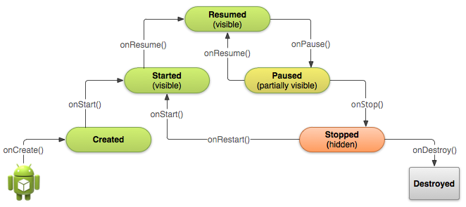

正确使用你的Activity生命周期函数去保障应用程序的良好表现，必须注意很多方面，包括下面的内容：
在这种状态下，该Activity在前台运行，用户可以与它进行交互。（有时也简称为“running”状态。）
在这种状态下，该Activity被部分遮蔽（被其他在前台的半透明或不覆盖整个屏幕的活动遮住）。此状态不接受用户输入，并且不能执行任何代码。
在这种状态下，该活动是完全隐藏，不可见的，它被认为是在后台。虽然停止，活动实例和所有成员变量如状态信息将被保留，但不能执行任何代码。
都是非常短暂而且系统通过调用函数使得非常快地转到下一状态。 因此，当系统调用了onCreated()之后，非常快地就调用了onStart()方法使得进入下一状态，而又马上调用了onResumed又进入了下一状态。